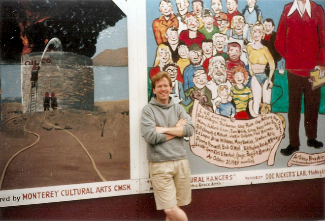
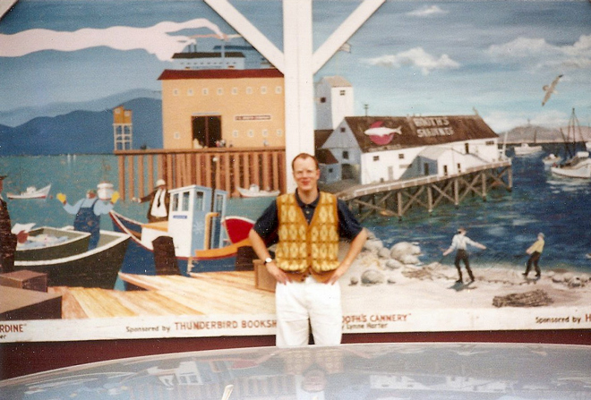
Hiring a car, Tom and I drove from San Francisco down to Los Angeles to stay with another friend, Celeste. Our first stop (for coffee) was in Monterey. We clearly needed the caffeine as these two shots are out of focus ...
Our next stop was at San Simeon (Hearst Castle), the joint concept of William Randolph Hearst, the publishing tycoon, and his architect Julia Morgan, it was built between 1919 and 1947. Known formally as "La Cuesta Encantada" (The Enchanted Hill), Hearst himself called his castle the "Ranch".
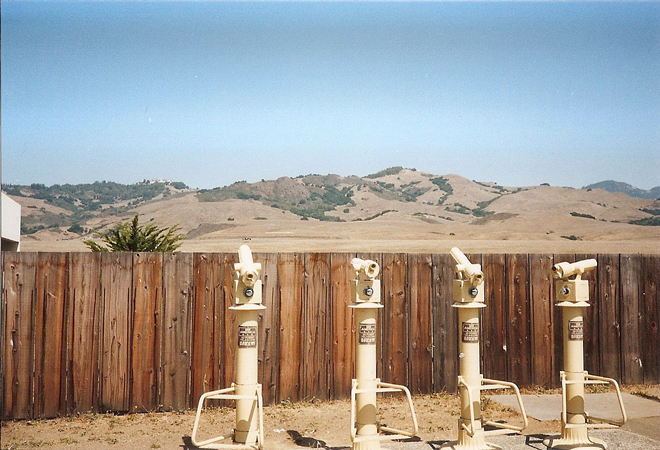
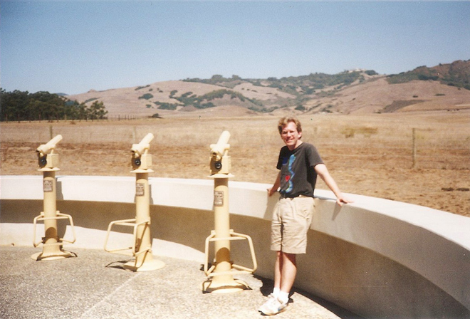
In the Roaring Twenties and into the 1930s, Hearst Castle reached its social peak. Originally intended as a family home for Hearst, his wife Millicent and their five sons, by 1925 Hearst had effectively separated from his wife and held court at San Simeon with his mistress, the actress Marion Davies. Their guest list comprised most of the Hollywood stars of the period; Charlie Chaplin, Cary Grant and the Marx Brothers, Greta Garbo, Buster Keaton, Mary Pickford, Jean Harlow and Clark Gable all visited.
Casa Grande, inspired by the Church of Santa María la Mayor, Ronda, Spain, formed the centrepiece of Hearst's estate.
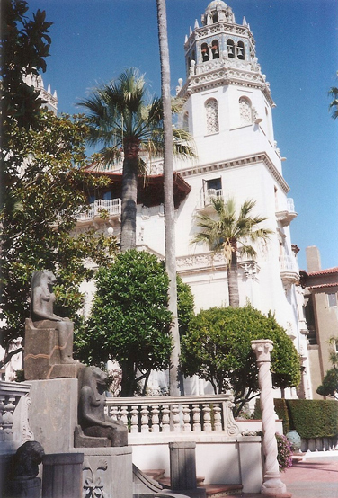
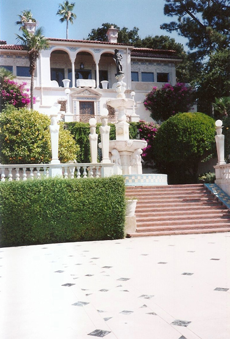
Political luminaries covered Calvin Coolidge and Winston Churchill while other notables included Charles Lindbergh, P. G. Wodehouse and George Bernard Shaw. Visitors gathered each evening at Casa Grande for drinks in the Assembly Room, dined in the Refectory and watched the latest movie in the Theatre before retiring to the luxurious accommodation provided by the guest houses of Casa del Mar, Casa del Monte and Casa del Sol.
During the days, they admired the views, rode, played tennis, bowls or golf and swam in the "most sumptuous swimming pool on earth".
Hearst, his castle and his lifestyle were satirised by Orson Welles in his 1941 film Citizen Kane. In the film, which Hearst sought to suppress, Charles Foster Kane's palace Xanadu is said to contain, "paintings, pictures, statues, the very stones of many another palace ... enough for ten museums; the loot of the world".
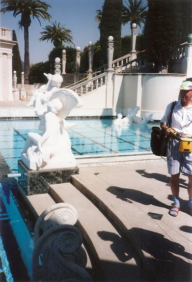
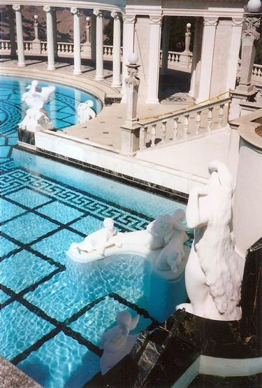
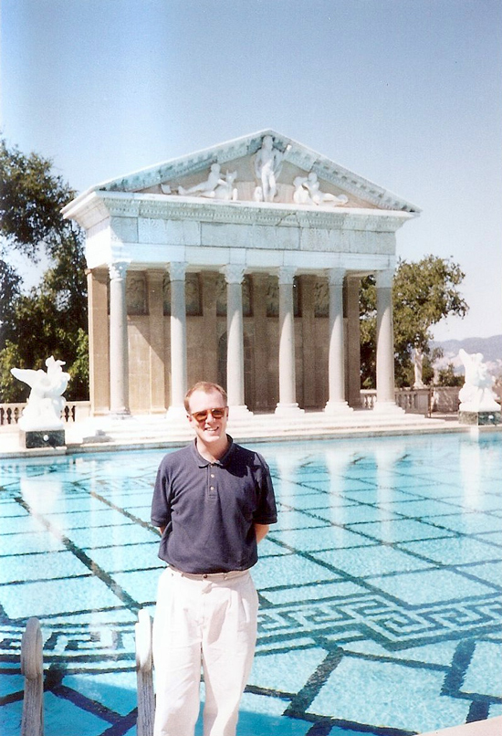
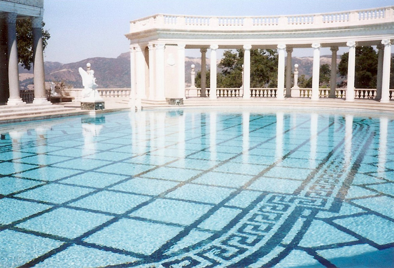
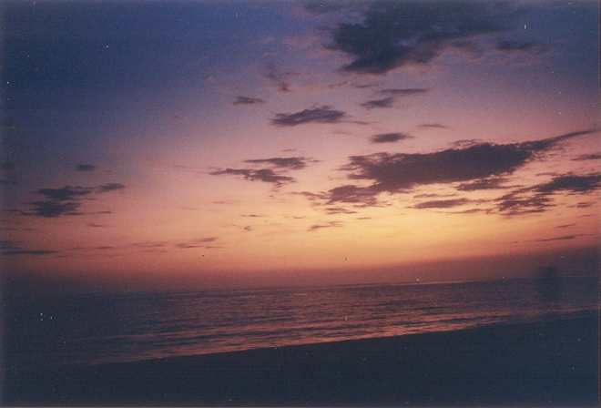
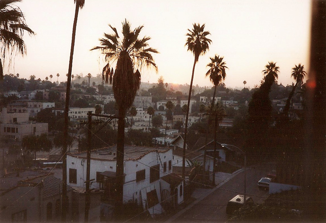